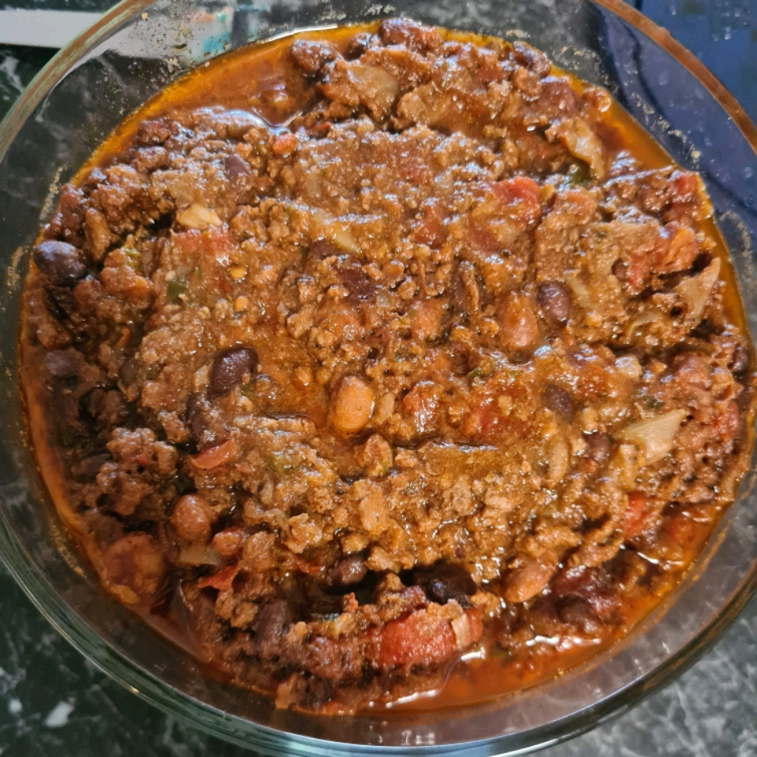

Chili

Ingredients
- 5 tbsp vegetable oil
- 2 large onions, chopped
- 1 chili pepper, chopped
- 5 cloves garlic, chopped
- 2 lbs lean ground beef
- 3 (14.5 oz) cans whole peeled tomatoes with liquid, chopped
- 1 1/2 tsp salt
- 1 tsp freshly ground black pepper
- 1 1/2 tbsp ground cumin
- 1/2 tbsp chili powder
- 2 tbsp paprika
- 2 tbsp dried oregano
- 2 cinnamon sticks
- 6 whole cloves
- 2 (15.25 oz) cans red kidney beans, rinsed and drained
Steps
- In a medium sized stock pot, heat the oil over medium heat.
- Saute onion, chili pepper, and garlic until soft.
- Add ground beef.
- Cook and stir until meat is browned.
- Pour in tomatoes with liquid, salt, pepper, cumin, chili powder, paprika, oregano, cinnamon sticks, and cloves.
- Cover and simmer for 45 mins.
- Stir in kidney beans, and cook another 15 mins.
- Remove cinnamon sticks before serving.